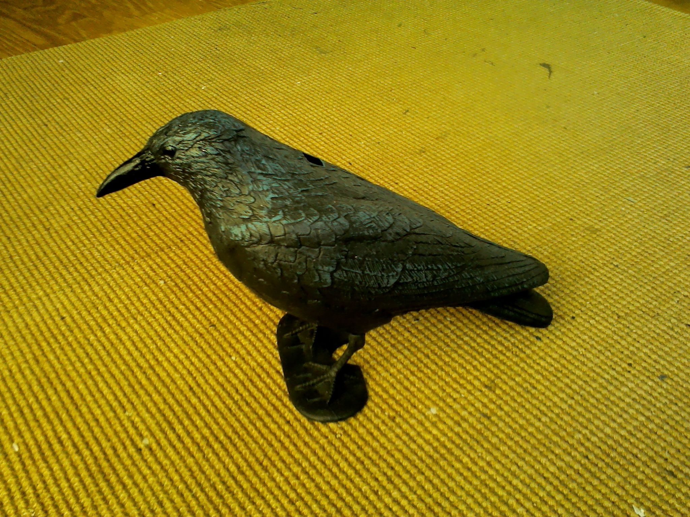

Saturday, January the 28th, 2017
back to: title, date or indexes
In my experience, it is not often you get a crow for Christmas. Indeed, until last month, I don't think I had been given a crow on any festive occasion. Naturally, I was duly awestruck when, on Christmas Day just past, I unwrapped from its packaging a splendid crow. I named it Tippi (of course) and, rather belatedly, here is a snap:

I am hoping that in future Tippi will be making corvine contributions to Hooting Yard. However, given that it is a mute, plastic crow, these may be few and far between.